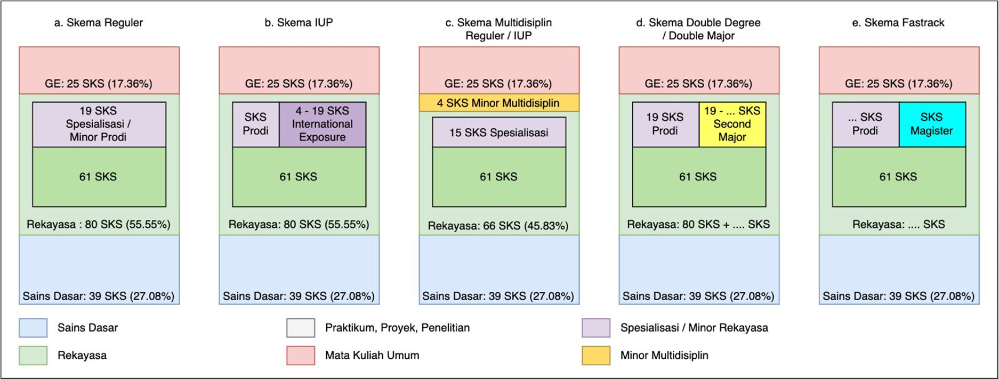
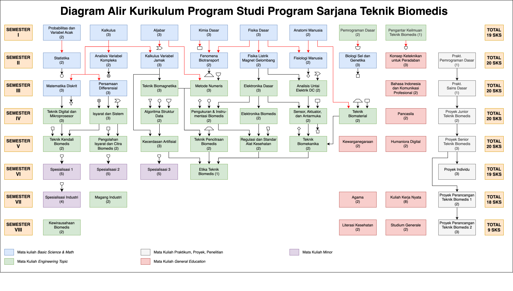

Departemen Teknik Elektro dan Teknologi Informasi UGM
Struktur kurikulum baru berstandar akreditasi IABEE serta panduan lengkap mekanisme peralihan angkatan 2023–2025.
Lembaga pendidikan tinggi teknik berjejaring nasional dan global untuk menguatkan kemandirian, kedaulatan bangsa, pelambatan entropi dunia, dan peradaban baru.
Menjadi sumber inovasi yang universal di Bidang Ilmu Teknik Elektro dan Teknologi Informasi untuk kepentingan bangsa dan kemainan yang dijiwai Pancasila.
Menjadi sumber inovasi yang universal di Bidang Ilmu Teknik Elektro & Teknologi Informasi dalam penyelesaian masalah Biomedis untuk kepentingan bangsa dan kemanusiaan.
Menunjukkan kualitas kepemimpinan yang kuat, menjunjung tinggi standar etika yang ketat, dan menjalani pembelajaran sepanjang hayat dengan adaptabilitas tinggi terhadap isu global dan sosial.
Meraih kesuksesan dalam karier teknis atau profesional di bidang teknik biomedis dengan menunjukkan integritas moral, kompetensi profesional tingkat tinggi, dan kemampuan komunikasi yang efektif.
| Capaian Pembelajaran Lulusan (CPL) Teknik Biomedis UGM | Kriteria Kompetensi Lulusan IABEE (Kriteria Umum) |
|---|---|
| CPL 1 — Tanggung Jawab Profesional & Etika | Kompetensi (i): Etika profesi dan tanggung jawab insinyur dalam masyarakat. |
| CPL 2 — Pemecahan Masalah & Eksperimentasi | Kompetensi (a), (c), (d): Aplikasi matematika/sains, eksperimen, investigasi masalah kompleks. |
| CPL 3 — Desain & Solusi Rekayasa Kontekstual | Kompetensi (b): Desain sistem/komponen/proses biomedis sesuai kebutuhan dan batasan. |
| CPL 4 — Komunikasi & Kerja Sama Tim | Kompetensi (f), (g), (h): Komunikasi efektif tertulis/lisan, kerja sama tim multidisiplin. |
| CPL 5 — Pembelajaran Sepanjang Hayat & Adaptasi Teknologi | Kompetensi (e), (j): Pembelajaran mandiri sepanjang hayat, penggunaan metode rekayasa modern. |
Fokus pada fondasi matematika kuat, sains dasar biomedis (fisika, kimia, biologi sel, anatomi, fisiologi), dasar pemrograman, dan analisis untai listrik.
Pengolahan isyarat/citra, kecerdasan artifisial, biomekanika, proyek desain (Junior, Senior, Perancangan 1 & 2), magang industri 1 semester, dan mata kuliah spesialisasi klaster.


Baru menempuh Semester 1–2 — mengikuti struktur baru dengan penyesuaian ringan.
| Semester | Penyesuaian | SKS |
|---|---|---|
| 1–2 | Sudah menempuh. MK wajib K2026 yang belum terambil ditawarkan di semester berikutnya. | 38 |
| 3 | + Anatomi Manusia (2 SKS) + PKTB (1 SKS) | 20 |
| 4 | + Fisiologi Manusia (2 SKS) + Statistika (2 SKS) | 21 |
| 5–8 | Mengikuti K2026 penuh tanpa penyesuaian tambahan. | 19 / 19 / 18 / 9 |
Telah menyelesaikan setara Semester 1–3 — peralihan mulai Semester 5.
| Semester | Penyesuaian | SKS |
|---|---|---|
| 1–4 | Telah menyelesaikan MK setara kurikulum lama. MK wajib K2026 yang belum terambil ditawarkan di semester berikutnya. | 79 |
| 5 | + Elektronika Biomedis (2) + Anatomi Manusia (2) + PKTB (1) + Proyek Junior (2) | 19 |
| 6 | + Fisiologi (2) + Sensor dan Antarmuka (2) + Pancasila (2) + Proyek Senior (3) | 19 |
| 7 | + Bahasa Indonesia & Komunikasi Profesional (2) | 20 |
| 6, 8 | Mengikuti K2026 penuh tanpa penyesuaian tambahan. | 19 / 9 |
Telah menyelesaikan setara Semester 1–5 — penyesuaian terbesar pada Spesialisasi.
| Semester | Penyesuaian | SKS |
|---|---|---|
| 1–6 | Telah menyelesaikan MK setara kurikulum lama. MK wajib K2026 yang belum terambil ditawarkan di semester berikutnya. | 116 |
| 7 | + Etika (1)* + Regulasi & Standar Alkes (2) + Kecerdasan Artifisial (2) + Proyek Perancangan TB 2 (2) | 19 |
| 8 | + Humaniora Digital (2 SKS) + Proyek Individu (3 SKS) (Diakui/disetarakan dari capaian sebelumnya) | 11 |
* Tanda (*) menunjukkan MK dengan penyesuaian bobot SKS mengikuti porsi spesialisasi pada struktur baru.
| Mata Kuliah Kurikulum 2021 | SKS | Mata Kuliah Ekuivalen K2026 | SKS | Status / Keterangan |
|---|---|---|---|---|
| Semester 1 | ||||
TKU211131 Pemrograman Dasar |
3 | TBM261107 Pemrograman Dasar |
2 | Turun 1 SKS |
TKU211102 Matematika Diskrit |
3 | TBM262101 Matematika Diskrit |
3 | Ekuivalen |
TKU211104 Teori Vektor dan Matriks |
2 | TKF261103 Aljabar Linear |
3 | Naik 1 SKS |
TKU211101 Kalkulus Variabel Tunggal |
3 | TKF261102 Kalkulus |
3 | Ekuivalen |
TKU211121 Fisika Mekanika Klasik |
2 | TKF261105 Fisika Dasar |
3 | Naik 1 SKS |
TKU211122 Fisika Fluida, Kalor, dan Gelombang |
2 | TBM261204 Fenomena Biotransport |
2 | Ekuivalen |
TKB211101 Kimia Dasar |
2 | TKF261104 Kimia Dasar |
3 | Naik 1 SKS |
TKU212142 Teknik Digital |
2 | TBM262201 Teknik Digital dan Mikroprosesor |
3 | Naik 1 SKS |
| Semester 2 | ||||
TKU211202 Aljabar Linear |
3 | Penggabungan (ke TKF261103 Aljabar Linear) |
— | Restrukturisasi |
TKU211131P Prakt. Pemrograman Dasar |
1 | TBM261209 Prakt. Pemrograman Dasar |
1 | Ekuivalen |
TKB211201 Biologi |
2 | TBM261207 Biologi Sel dan Genetika |
3 | Naik 1 SKS |
FIU211201 Konsep Keteknikan untuk Peradaban |
2 | TKF261208 Konsep Keteknikan untuk Peradaban |
3 | Naik 1 SKS |
TKU211103 Kalkulus Variabel Jamak |
3 | TBM261202 Kalkulus Variabel Jamak |
3 | Ekuivalen |
TKU211201 Analisis Variabel Kompleks |
3 | TBM261202 Analisis Variabel Kompleks |
2 | Turun 1 SKS |
TKU211221 Fisika Listrik dan Magnet |
3 | TBM261205 Fisika Listrik, Magnet dan Gelombang |
2 | Turun 1 SKS |
TKU211211 Probabilitas dan Variabel Acak |
2 | TBM261101 Probabilitas dan Variabel Acak |
2 | Ekuivalen |
| Mata Kuliah Kurikulum 2021 | SKS | Mata Kuliah Ekuivalen K2026 | SKS | Status / Keterangan |
|---|---|---|---|---|
| Semester 3 | ||||
TKU212244 Sistem Mikroprosesor |
3 | Penggabungan (ke TBM262201 Tek. Digital & Mikroprosesor) |
— | Restrukturisasi |
TKU212101 Metode Numeris |
3 | TBM262104 Metode Numeris |
3 | Ekuivalen |
TKU212111 Statistika |
2 | TBM261201 Statistika |
2 | Ekuivalen |
TKU212141 Isyarat dan Sistem |
3 | TBM262202 Isyarat dan Sistem |
3 | Ekuivalen |
TKU212143 Analisis Untai Elektrik DC |
3 | TBM262106 Analisis Untai Elektrik DC |
3 | Ekuivalen |
TKU212144 Telekomunikasi Dasar |
3 | Dihapus dari K2026 | — | Dihapus |
TKU212121P Prakt. Sains Dasar |
1 | TBM262108 Prakt. Sains Dasar |
1 | Ekuivalen |
TKU211203 Persamaan Differensial |
3 | TBM262102 Persamaan Differensial |
3 | Ekuivalen |
| Semester 4 | ||||
TKU211231 Algoritma dan Struktur Data |
3 | TBM262203 Algoritma Struktur Data |
2 | Turun 1 SKS |
TKU212242 Elektronika Dasar |
3 | TBM262105 Elektronika Dasar |
3 | Ekuivalen |
TKU212243 Teknik Kendali |
3 | TBM263101 Teknik Kendali Biomedis |
2 | Turun 1 SKS |
TKU213141 Jaringan Komunikasi dan Data |
3 | Dihapus dari K2026 | — | Dihapus |
TKB212201 Teknik Biomagnetika |
3 | TBM263105 Teknik Biomagnetika |
2 | Turun 1 SKS |
TKB213203 Teknik Pengolahan Citra Biomedis |
2 | TBM263102 Pengolahan Isyarat dan Citra Biomedis |
2 | Ekuivalen |
TKB212202 Teknik Pengolahan Isyarat Biomedis |
3 | Penggabungan (ke TBM263102 Pengolahan Isyarat & Citra) |
— | Restrukturisasi |
TKB212203 Pengukuran dan Instrumentasi Biomedis |
2 | TBM262204 Pengukuran dan Instrumentasi Biomedis |
2 | Ekuivalen |
| Mata Kuliah Kurikulum 2021 | SKS | Mata Kuliah Ekuivalen K2026 | SKS | Status / Keterangan |
|---|---|---|---|---|
| Semester 5 | ||||
TKU213101 Teknik Optimisasi |
3 | Dihapus dari K2026 | — | Dihapus |
TKU213142 Kerja Praktik |
2 | TBM264102 Magang Industri |
2 | Ekuivalen |
TKB213101 Elektronika Biomedis |
2 | TBM262205 Elektronika Biomedis |
2 | Ekuivalen |
TKB213102 Anatomi dan Fisiologi |
3 | TBM261106 Anatomi Manusia (2) +TBM261206 Fisiologi Manusia (2) |
4 | Pecah · SKS +1 |
TKB213103 Teknik Biomekanika |
2 | TBM263105 Teknik Biomekanika |
2 | Ekuivalen |
TKB213104 Proyek Junior Teknik Biomedis |
2 | TBM262209 Proyek Junior Teknik Biomedis |
2 | Ekuivalen |
TKB213105 Sensor dan Transduser |
2 | TBM262206 Sensor, Aktuator dan Antarmuka |
2 | Ekuivalen |
| Semester 6 | ||||
TKB213201 Teknik Biomaterial |
2 | TBM262207 Teknik Biomaterial |
2 | Ekuivalen |
TKB213202 Teknik Pencitraan Biomedis |
2 | TBM263104 Teknik Pencitraan Biomedis |
2 | Ekuivalen |
TKB213204 Proyek Perancangan Teknik Biomedis 1 |
2 | TBM264105 Proyek Perancangan Teknik Biomedis 1 |
2 | Ekuivalen |
TKB213205 Proyek Senior Teknik Biomedis |
3 | TBM263109 Proyek Senior Teknik Biomedis |
3 | Ekuivalen |
UNU21xxxx Pilihan C/MBKM |
2 | TBM2632XX Spesialisasi |
2 | Ekuivalen |
FIU213201 Pancasila |
2 | FIU262208 Pancasila |
2 | Ekuivalen |
UNU211101 Bahasa Indonesia |
2 | UNU262107 Bahasa Indonesia dan Komunikasi Profesional |
2 | Ekuivalen |
UNU214202 Kewarganegaraan |
2 | UNU263107 Kewarganegaraan |
2 | Ekuivalen |
FIU2121xx Agama |
2 | FIU264103 Agama |
2 | Ekuivalen |
| Mata Kuliah Kurikulum 2021 | SKS | Mata Kuliah Ekuivalen K2026 | SKS | Status / Keterangan |
|---|---|---|---|---|
| Semester 7 | ||||
UNU222002 Komunikasi Masyarakat |
2 | UNU2641XX Komunikasi Masyarakat |
2 | Ekuivalen |
TKB214101 Proyek Perancangan Teknik Biomedis 2 |
2 | TBM264204 Proyek Perancangan Teknik Biomedis 2 |
3 | Naik 1 SKS |
UNU214101 Kuliah Kerja Nyata |
4 | UNU2641XX Kuliah Kerja Nyata |
8 | SKS Konversi ×2 |
UNU222003 Penerapan Teknologi Tepat Guna |
2 | UNU2641XX Penerapan Teknologi Tepat Guna |
2 | Ekuivalen |
UNU242033 Literasi Kesehatan |
2 | TKF264202 Literasi Kesehatan (K5L) |
2 | Ekuivalen |
TKB21xxxx Pilihan A/B |
6 | TBM2632XX Spesialisasi |
6 | Ekuivalen |
UNU21xxxx Pilihan C/MBKM |
2 | TBM2632XX Spesialisasi |
2 | Ekuivalen |
TKB2141xx Pilihan B |
3 | TBM2632XX Spesialisasi |
3 | Ekuivalen |
| Semester 8 | ||||
UNU214201 Studium Generale |
2 | TBM264203 Studium Generale |
2 | Ekuivalen |
TKB2132xx Pilihan A |
6 | TBM2632XX Spesialisasi |
6 | Ekuivalen |
TKU214241 Skripsi & Pendadaran |
4 | TBM263205 Proyek Individu |
3 | Turun 1 SKS |